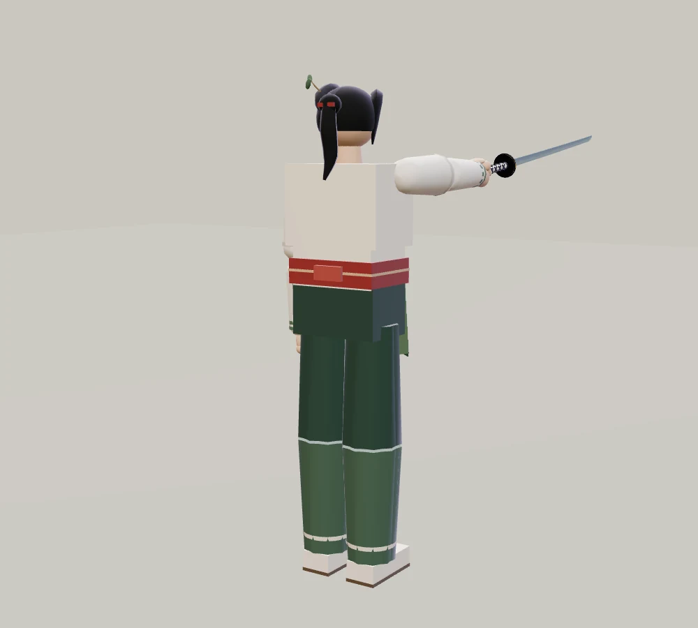
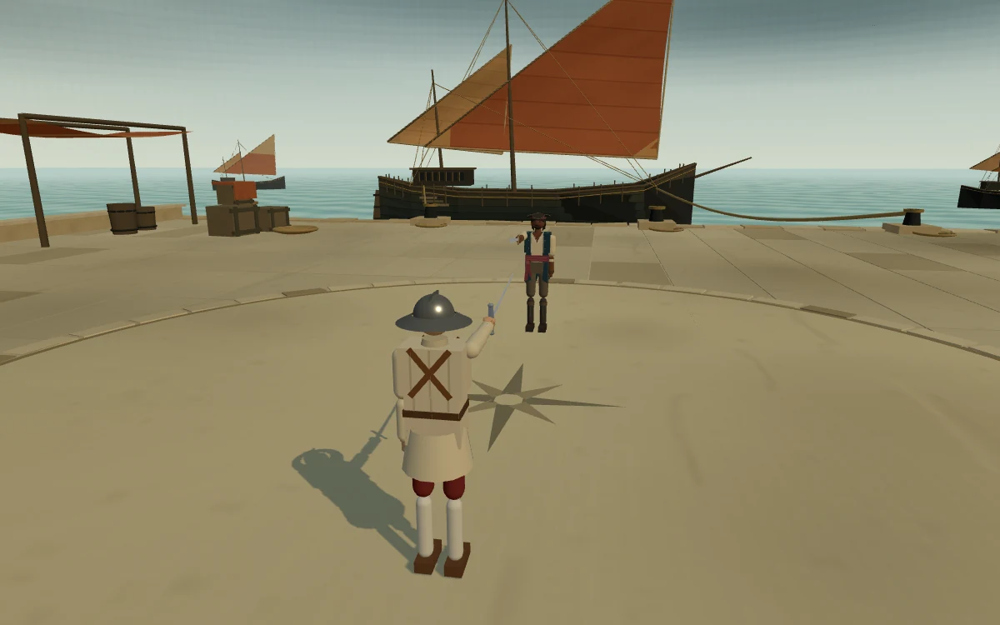

적막 · 자연과 사람
숲과 항구의 디테일
영만의 머리와 옷, 신목 아래의 풍경, 바닷바람이 머무는 항구를 다듬었습니다. 같은 카메라로 촬영한 실제 게임 화면을 전후로 비교합니다.
사진을 누르면 크게 볼 수 있습니다. 인물의 정적 외형 비교 자세는 실제 전투 자세와 다릅니다.
01 / 영만
숲을 지키는 열아홉
길어진 반묶음 머리와 작은 주홍 매듭, 얼굴 옆으로 흐르는 머리카락을 다듬었습니다. 옷깃과 소맷단, 허리의 겹끈과 작은 잎 자수, 이끼색 하카마의 주름을 더했습니다.


뒤에서 본 머리와 옷 비교



두 링크의 숲은 모두 개선된 무대입니다. 인물 외형을 비교하는 링크입니다.
02 / 신목의 숲
나무 아래 머무는 풍경
뿌리 주변의 이끼와 고사리, 닳은 디딤돌을 더했습니다. 나무 무리가 겹치고 틈이 열리며, 따뜻한 빛이 흙바닥으로 들어오는 풍경을 비교해 보세요.


신목 주변 자세히 비교


03 / 산호 항구
바닷바람이 머무는 곳
소금기 밴 포장과 배수 홈, 말리는 그물, 계단 아래 젖은 산호암반과 해안 식물을 더했습니다. 갈매기 두 마리와 드문 울음, 불규칙하게 이어지는 파도와 돛 소리가 항구를 채웁니다.
오마리의 캐릭터 외형은 그대로입니다. 플레이할 때 소리를 켜면 갈매기와 항구의 환경음을 함께 확인할 수 있습니다.



항구의 자연과 오브제 자세히 비교


이졸데는 이전 외형으로
이졸데의 일반 외형은 개선 전의 긴 흑발과 밝은 옷으로 되돌렸습니다.
돌아온 이졸데와 겨루기